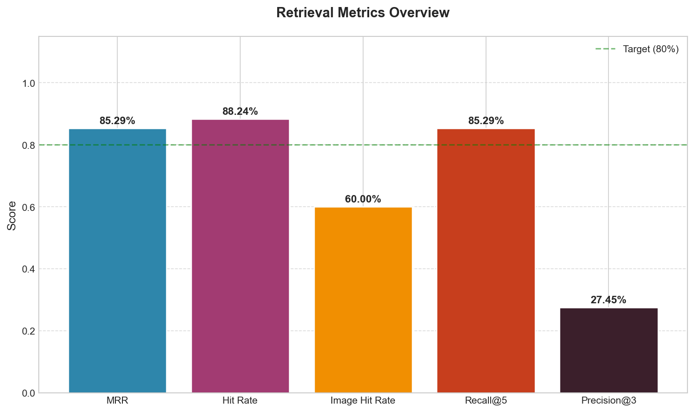
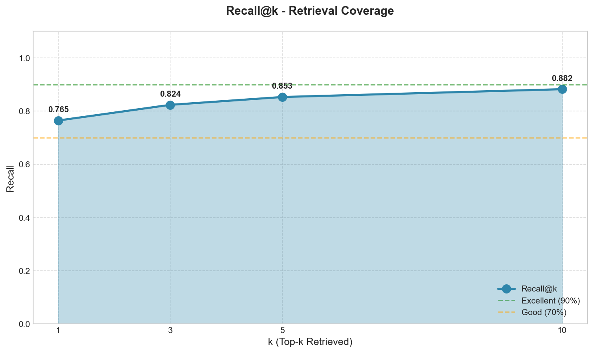
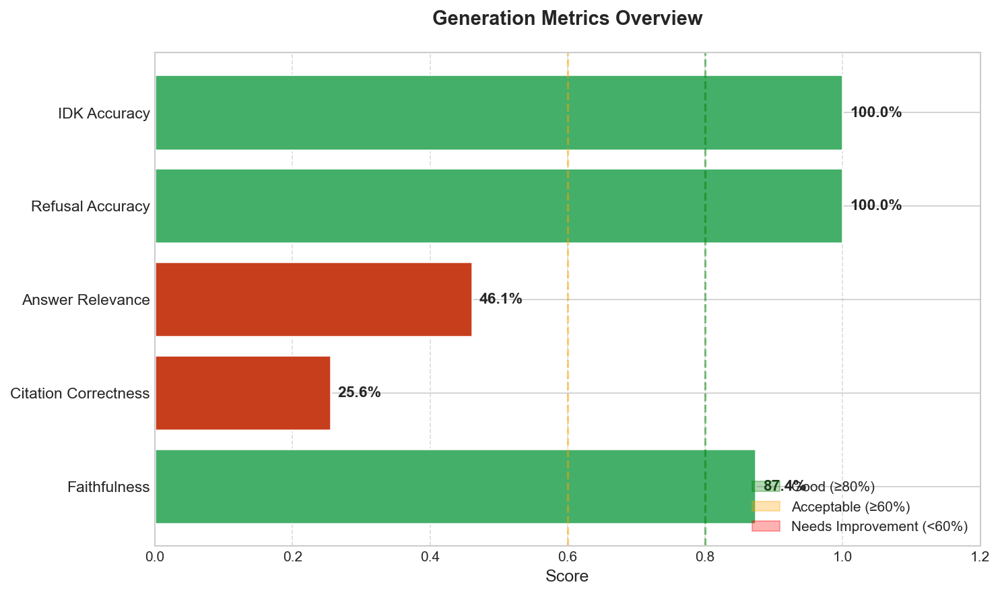
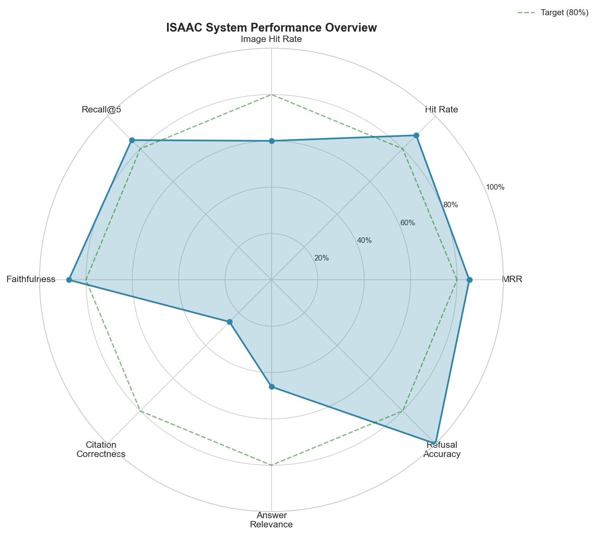

ISAAC Evaluation Report
Generated: 2026-01-30T01:22:47.618065
Retrieval Metrics
MRR
0.8529
Hit Rate
88.24%
Image Hit Rate
60.00%
Avg Retrieval Time
2582ms
Generation Metrics
Faithfulness
87.37%
Citation Correctness
25.61%
Answer Relevance
46.11%
Refusal Accuracy
100.00%
Recall@k
@1
0.7647
@3
0.8235
@5
0.8529
@10
0.8824
Charts

Retrieval Overview

Recall At K

Generation Overview

Radar Chart
Error Analysis
Failure Modes
Incorrect Citations
: 9 cases - Citations don't match retrieved content
Problematic Queries
G012
: Low relevance score - embedding mismatch
E001
: Low recall - relevant content not retrieved
E002
: Low recall - relevant content not retrieved
Recommendations
**Improve image-text linkage**: Image hit rate is low. Ensure image metadata (captions, alt-text) is properly indexed and linked to documents.
**Improve citation accuracy**: Citations don't always match sources. Consider explicitly listing source names in the context formatting.